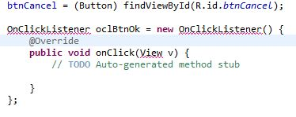
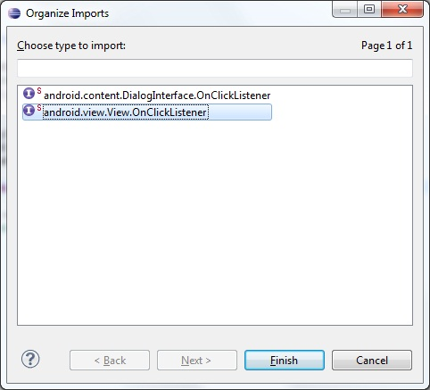
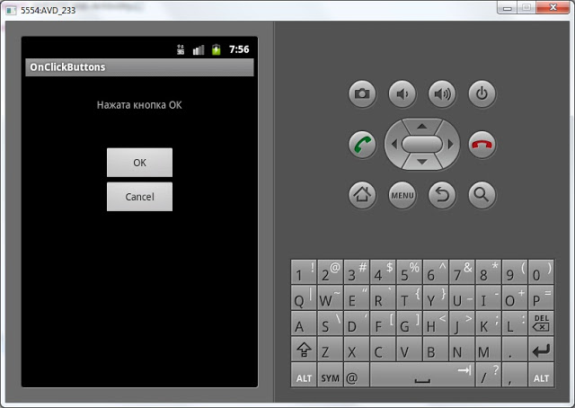
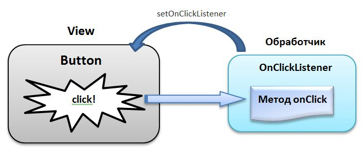

В этом уроке мы:
- научимся обрабатывать нажатие кнопки и узнаем, что такое обработчик
Создадим проект:
Project name: P0091_OnClickButtons
Build Target: Android 4.0
Application name: OnClickButtons
Package name: ru.startandroid.develop.onclickbuttons
Create Activity: MainActivity
В layout-файл main.xml напишем следующее и сохраним:
<?xml version="1.0" encoding="utf-8"?>
<LinearLayout
xmlns:android="http://schemas.android.com/apk/res/android"
android:layout_width="match_parent"
android:layout_height="match_parent"
android:orientation="horizontal">
<LinearLayout
android:id="@+id/linearLayout1"
android:layout_width="match_parent"
android:layout_height="match_parent"
android:layout_margin="30dp"
android:orientation="vertical">
<TextView
android:id="@+id/tvOut"
android:layout_width="wrap_content"
android:layout_height="wrap_content"
android:layout_gravity="center_horizontal"
android:layout_marginBottom="50dp"
android:text="TextView">
</TextView>
<Button
android:id="@+id/btnOk"
android:layout_width="100dp"
android:layout_height="wrap_content"
android:layout_gravity="center_horizontal"
android:text="OK">
</Button>
<Button
android:id="@+id/btnCancel"
android:layout_width="100dp"
android:layout_height="wrap_content"
android:layout_gravity="center_horizontal"
android:text="Cancel">
</Button>
</LinearLayout>
</LinearLayout> У нас есть TextView с текстом и две кнопки: OK и Cancel. Мы сделаем так, чтобы по нажатию кнопки менялось содержимое TextView. По нажатию кнопки OK – будем выводить текст: «Нажата кнопка ОК», по нажатию Cancel – «Нажата кнопка Cancel».
Открываем MainActivity.java. Описание объектов вынесем за пределы метода onCreate. Это сделано для того, чтобы мы могли из любого метода обращаться к ним. В onCreate мы эти объекты заполним с помощью уже пройденного нами метода findViewById. В итоге должен получиться такой код:
public class MainActivity extends Activity {
TextView tvOut;
Button btnOk;
Button btnCancel;
/** Called when the activity is first created. */
@Override
public void onCreate(Bundle savedInstanceState) {
super.onCreate(savedInstanceState);
setContentView(R.layout.main);
// найдем View-элементы
tvOut = (TextView) findViewById(R.id.tvOut);
btnOk = (Button) findViewById(R.id.btnOk);
btnCancel = (Button) findViewById(R.id.btnCancel);
}
}Обновляем секцию import (CTRL+SHIFT+O). Объекты tvOut, btnOk и btnCancel соответствуют View-элементам экрана и мы можем с ними работать. Нам надо научить кнопку реагировать на нажатие. Для этого у кнопки есть метод setOnClickListener (View.OnClickListener l). На вход подается объект с интерфейсом View.OnClickListener. Именно этому объекту кнопка поручит обрабатывать нажатия. Давайте создадим такой объект. Код продолжаем писать в onCreate:
OnClickListener oclBtnOk = new OnClickListener() {
@Override
public void onClick(View v) {
// TODO Auto-generated method stub
}
};Eclipse подчеркивает OnClickListener красной линией

т.к. пока не знает его. Необходимо обновить секцию import. Жмем CTRL+SHIFT+O, Eclipse показывает нам, что он знает два интерфейса с именем onClickListener и предлагает выбрать. Нам нужен View.OnClickListener, т.к. метод кнопки setOnClickListener принимает на вход именно его.

Итак, мы создали объект oclBtnOk, который реализует интерфейс View.OnClickListener. Объект содержит метод onClick – это как раз то, что нам нужно. Именно этот метод будет вызван при нажатии кнопки. Мы решили, что по нажатию будем выводить текст: «Нажата кнопка ОК» в TextView (tvOut). Реализуем это.
В методе onClick пишем:
tvOut.setText("Нажата кнопка ОК");Обработчик нажатия готов. Осталось «скормить» его кнопке с помощью метода setOnClickListener.
btnOk.setOnClickListener(oclBtnOk);В итоге должен получится такой код:
public class MainActivity extends Activity {
TextView tvOut;
Button btnOk;
Button btnCancel;
/** Called when the activity is first created. */
@Override
public void onCreate(Bundle savedInstanceState) {
super.onCreate(savedInstanceState);
setContentView(R.layout.main);
// найдем View-элементы
tvOut = (TextView) findViewById(R.id.tvOut);
btnOk = (Button) findViewById(R.id.btnOk);
btnCancel = (Button) findViewById(R.id.btnCancel);
// создаем обработчик нажатия
OnClickListener oclBtnOk = new OnClickListener() {
@Override
public void onClick(View v) {
// Меняем текст в TextView (tvOut)
tvOut.setText("Нажата кнопка ОК");
}
};
// присвоим обработчик кнопке OK (btnOk)
btnOk.setOnClickListener(oclBtnOk);
}
}Все сохраняем и запускаем. Жмем на кнопку ОК и видим. Что текст изменился

Нажатие на Cancel пока ни к чему не приводит, т.к. для нее мы обработчик не создали и не присвоили. Давайте сделаем это аналогично, как для кнопки OK. Сначала мы создаем обработчик:
OnClickListener oclBtnCancel = new OnClickListener() {
@Override
public void onClick(View v) {
// Меняем текст в TextView (tvOut)
tvOut.setText("Нажата кнопка Cancel");
}
};Потом присваиваем его кнопке:
btnCancel.setOnClickListener(oclBtnCancel);Сохраняем, запускаем, проверяем. Обе кнопки теперь умеют обрабатывать нажатия.
Давайте еще раз проговорим механизм обработки событий на примере нажатия кнопки. Сама кнопка обрабатывать нажатия не умеет, ей нужен обработчик (его также называют слушателем - listener), который присваивается с помощью метода setOnClickListener. Когда на кнопку нажимают, обработчик реагирует и выполняет код из метода onClick. Это можно изобразить так:

Соответственно для реализации необходимо выполнить следующие шаги:
- создаем обработчик
- заполняем метод onClick
- присваиваем обработчик кнопке
и система обработки событий готова.